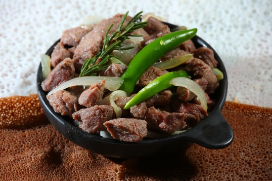

Home
Tibst

Spiced Sautéed Meat (A Celebration Dish)
Tibs (or T'ibs) is one of the most popular and quickly prepared dishes in
Ethiopian cuisine, often served during celebrations or as a mark of
respect for a guest.
The word "tibs" literally means "fried" or "sautéed." It features
bite-sized pieces of meat—most commonly beef or lamb—that are quickly
pan-fried with Ethiopian spiced butter, aromatics, and the signature
Berbere spice blend.
Ingredients
- Cubed beef
- Red Onions(lots)
- Niter kibbeh
- Oil
- Awaze
- Salt
Steps
-
Prep: Cut the meat into bite-sized cubes and season lightly with salt.
-
In a hot pan or skillet, quickly sear the meat (often in batches) until
browned, then set it aside.
-
Melt the Niter Kibbeh (or heat the oil) and quickly sauté the sliced
onions, garlic, and ginger.
-
Return the meat to the pan. Stir in the Berbere spice (or Awaze paste),
along with any other seasonings or a splash of water/broth to create a
light glaze.
-
Finish & Serve: Sauté until the meat is cooked to the desired doneness.
Serve immediately while still sizzling, often garnished with fresh
jalapeño, alongside Injera (the spongy flatbread).